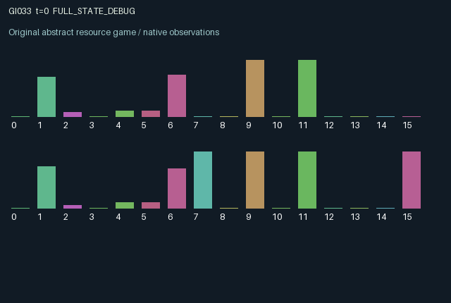

GI033 / LEGACY_ARRAY
astra-d2-00033: pollutant transport, gates and persistent soil debt
2 agents5 actions16 observation columns32 original horizonRuntime: PASS
Release verification episode
Untrained uniform legal actions. Actual JAX state sampled along the full original episode; full-state debug camera. No human performance or learning claim.

Run this game
crucibles play --game 33
Start Python locally, then open the address printed by the terminal. Installation, multiplayer, takeover and keyboard controls →
Objective, rewards & ending
Exact task contract
{
"termination": "Original kernel t >= 32; see mechanism and source"
}Declared per-step reward bounds: -1.0 to 1.0. Observability: source_defined.
Rules
Original mechanism document (historical status wording retained)
# astra-d2-00033: pollutant transport, gates and persistent soil debt This is an original parentless source proposal under work request `astra-d2-initial-00032-00035-a00`. Its generic relatives are coupled-resource extraction, delayed pollution externalities and costly protection. It is a bounded toy transition system, not a calibrated hydrological model or a copy of a consulted benchmark. Nonisomorphism and eligibility remain unassessed. Each participant controls a local water reservoir with pollutant load, a decaying gate and slowly changing soil damage. A public eight-step tide determines which reservoir is upstream. Water transfer is immediate within a transition; pollutant carried by that transfer, and pollutant flushed intentionally, enter a one-step transport buffer addressed to the other site. A flush can improve local extraction quality while worsening the other participant's later conditions. Filtering removes load without exporting it. The five legal actions are: 0 survey the other site's old pollutant load; 1 extract water; 2 flush pollutant using local water; 3 filter local load; 4 rebuild the local gate. Gates protect against incoming pollutant and restrict receiving water flow and fresh recharge. They also convert part of blocked buffered pollution into persistent local soil damage. Gate construction takes effect in the next state, so it cannot retroactively block the arrival processed in its own transition. Soil damage reduces future recharge and extraction utility; filtering slowly alleviates it. This creates different delayed consequences for exporting, treating and blocking the same pollution. The receiver learns its admitted incoming pollutant only after arrival. Each player observes its own water, pollutant, soil and gate, public gates and water at the other site, tide, public extraction quantities, and its last survey with an explicit age. Opponent pollutant and soil and the transport buffer are not directly disclosed. A survey reads the opponent's pre-transition load, so even a new survey can miss pollution arriving in that transition. The initially unknown survey uses value zero with age 32 to distinguish it from a fresh reading. Observation columns are: clock; own water; normalized own pollutant; own soil damage; own gate; other gate; other water; upstream-role flag; sine and cosine of tide phase; normalized surveyed opponent load; survey age; own last extraction; other last extraction; normalized admitted arrival; role index. Initialization and subsequent rainfall use only the explicitly supplied random keys. Extraction utility declines with local concentration and accumulated soil damage. Flush, filtering and rebuilding have explicit action costs and soil damage imposes a maintenance loss. The per-agent reward is the hyperbolic tangent of this signed utility, which bounds every finite legal transition within [-1, 1]. The concentration denominator has a positive 0.25 offset, and state resource stocks are clipped to fixed bounded ranges. Those operations define the toy dynamics and do not assert mass conservation. Both agents can alter the other's future pollutant, water and extraction payoff, while their own defensive choices alter the shared flow. The interface is A2/O16/U5 with terminal state at the 32nd transition. No candidate execution, compiler result, isolated-validation receipt, mechanism qualification or learning result is included. Only syntax parsing is authorized for the author; experimenter2 owns subsequent validation.
Commands
0Action 0; see mechanism and source
1Action 1; see mechanism and source
2Action 2; see mechanism and source
3Action 3; see mechanism and source
4Action 4; see mechanism and source
Roles & abilities
agent_0 Original legacy agent; see mechanism and source
agent_1 Original legacy agent; see mechanism and source
Observation permissions
Training receives only the original observation rows. Role cameras use declared visibility; debug cameras are explicitly marked. Local benchmark records log debug exposure and role takeover history.
Exact observation layout
[]
Entity visibility & attributes
[]
Actual verification & provenance
Per-game execution receipt
{
"game": "gi033",
"status": "PASS",
"verification_revision": 2,
"source_sha256": "80331d292950977e59adf3f92ca21a5e953b7c1d13b353b3a36e269b5dde85ca",
"seed": 20261101,
"runtime": {
"jax": "0.4.38",
"numpy": "1.26.4",
"devices": [
"TFRT_CPU_0"
]
},
"dimensions": {
"num_agents": 2,
"observation_size": 16,
"num_actions": 5,
"max_steps": 32
},
"checks": {
"eager_reset": {
"status": "PASS",
"seconds": 1.3254599571228027
},
"observation_spaces_legal_masks": {
"status": "PASS",
"seconds": 0.20185065269470215
},
"eager_step": {
"status": "PASS",
"seconds": 0.6495187282562256
},
"jit_reset": {
"status": "PASS",
"seconds": 0.41351938247680664
},
"jit_step": {
"status": "PASS",
"seconds": 0.33496689796447754
},
"eager_jit_integer_parity_float_measurement": {
"status": "PASS",
"seconds": 0.0005524158477783203
},
"jit_vmap_reset": {
"status": "PASS",
"seconds": 0.5489132404327393
},
"jit_vmap_step": {
"status": "PASS",
"seconds": 0.5244519710540771
},
"outer_autoreset_api": {
"status": "PASS",
"seconds": 0.7301433086395264
},
"full_original_horizon_episode_and_render": {
"status": "PASS",
"seconds": 1.1704201698303223
}
},
"human_scores": null,
"browser_controls": "PENDING",
"failures": [],
"elapsed_seconds": 6.685572862625122,
"float_parity_max_abs": 7.450580596923828e-09,
"numerical_parity": "UNDETERMINED_NONZERO_FLOAT_DIFFERENCE",
"raw_terminal_absorbing": "NOT_PART_OF_ORIGINAL_LEGACY_CONTRACT",
"terminal_outer_reset": "PASS",
"episode_steps": 32,
"scripted_random_returns": [
0.2688840015008651,
0.4652208011121104
],
"terminal": true,
"demo_information": "FULL_STATE_DEBUG",
"demo_frames": 33,
"render_roles_checked": 2
}Chromium control verification
{
"game": "gi033",
"status": "PASS",
"human_scores": null,
"engineering": true,
"checks": [
"catalog_selected_and_real_native_reset",
"dom_queue_and_native_step",
"second_participant_ownership_and_native_joint_step",
"all_roles_individually_controllable_no_role_cap",
"explicit_debug_camera",
"release_to_pure_ai_without_reset"
],
"ui_sha256": "15b5861d23b3c42811865c954d5a988280bbfd21cf8e93754be2437a027158c5",
"seconds": 3.937370538711548
}Original identity and file hashes
{
"id": 33,
"key": "gi033",
"title": "astra-d2-00033: pollutant transport, gates and persistent soil debt",
"summary": "",
"tags": [],
"family": "legacy_array",
"dimensions": {
"num_agents": 2,
"observation_size": 16,
"num_actions": 5,
"max_steps": 32
},
"source_sha256": "80331d292950977e59adf3f92ca21a5e953b7c1d13b353b3a36e269b5dde85ca",
"manifest_sha256": "97f4ba60e13287d1f8074d0d70f7f3996fad569fc02003fcddfdc9278872d938",
"files": [
{
"file": "candidate.py",
"sha256": "80331d292950977e59adf3f92ca21a5e953b7c1d13b353b3a36e269b5dde85ca",
"bytes": 5625,
"origin": "work/exp_2/astra_generation/discovery_v2/initial/candidate_00033/attempt_00/candidate.py"
},
{
"file": "mechanism.md",
"sha256": "0cd54e9eb7909588cd67350fe04b62f551e906d9a81cca7c19eda4aa5d80c463",
"bytes": 3529,
"origin": "work/exp_2/astra_generation/discovery_v2/initial/candidate_00033/attempt_00/mechanism.md"
}
],
"original_status": "LEGACY_SOURCE",
"original_saved_replay": false,
"release_validation": "PASS",
"human_scores": null,
"browser_validation": "PASS"
}